La Fricción del Micro-Ahorro

Ahorrar es una de las metas financieras más deseadas por los jóvenes adultos, pero también una de las más abandonadas. La investigación inicial reveló que las herramientas de banca tradicionales y las apps de finanzas personales sufren del mismo problema: exigen una entrada de datos manual constante, aburrida y confusa. Esta fricción cognitiva provoca que el usuario olvide registrar sus montos y eventualmente abandone el hábito.
UX Research e Inmersión
Conduje entrevistas con 12 usuarios potenciales de entre 20 y 28 años. A partir de los insights, sinteticé a una User Persona representativa, Sofía (23 años), una recién graduada que quiere ahorrar para un iPad y un curso de especialización pero que se siente abrumada por los tecnicismos de las aplicaciones de inversión tradicionales.
Fricciones del usuario móvil actual:
El Journey Map de Sofía evidenció que el "momento de dolor" principal se encuentra en los pasos redundantes para apartar dinero. La solución requería un atajo rápido, casi invisible, que permitiera apartar pequeñas cantidades de dinero con la simplicidad de enviar un mensaje de texto. Así nació el concepto de Cúmulo: acumular pequeños montos paso a paso.
Arquitectura de Información e Interacción

Mientras que el flujo de empatía describe el viaje emocional, la interacción con la aplicación requería mapear de forma exhaustiva cada pantalla del sistema. Diseñé un mapa lógico de navegación que conecta la configuración inicial (onboarding) con los módulos clave: creación de metas, depósito de ahorro y ajustes de seguridad.
Este mapa de interacción garantiza que el usuario nunca se encuentre en un escenario sin salida y reduce la fricción operativa al consolidar los flujos recurrentes (como añadir dinero o comprobar movimientos) en rutas rápidas directamente accesibles desde la barra de pestañas principal.
Del Papel al Pixel: Proceso de Diseño
El desarrollo de la interfaz comenzó con wireframes en papel para probar flujos rápidos. De ahí, escalé a wireframes de baja fidelidad para probar el orden de los elementos y, finalmente, a mockups de alta fidelidad en Figma. El sistema visual adoptó el lenguaje sobrio de mi portafolio: tonos alabastro limpios, tipografía legible y una paleta donde el verde oliva actúa como indicador de progreso positivo y metas cumplidas.
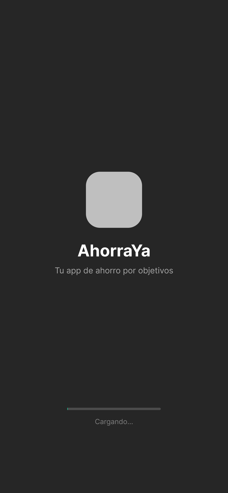
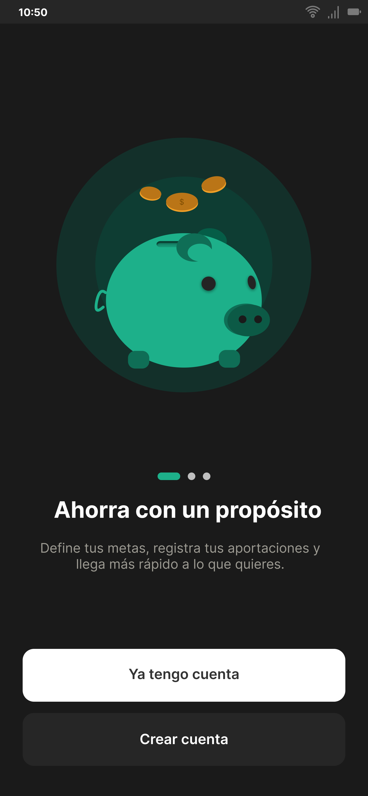
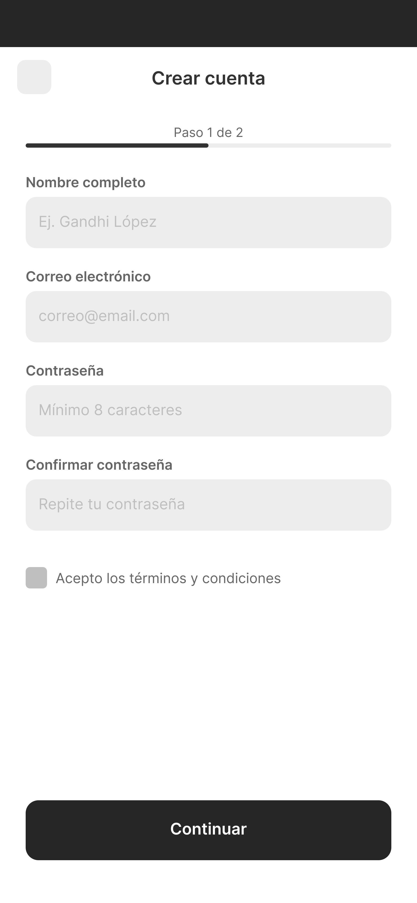

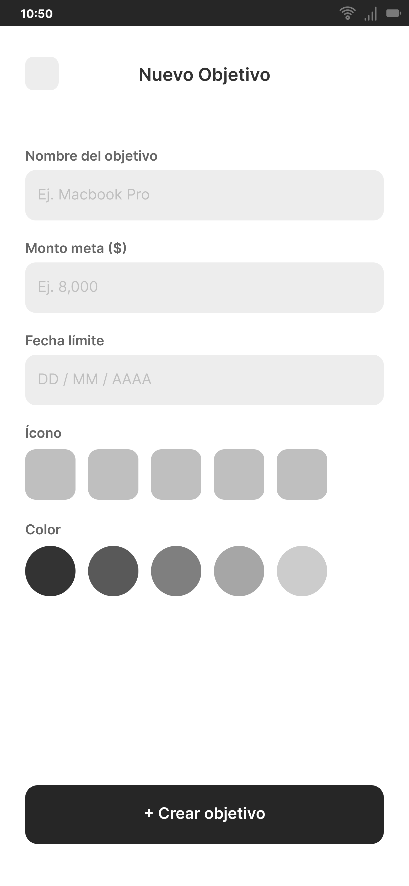


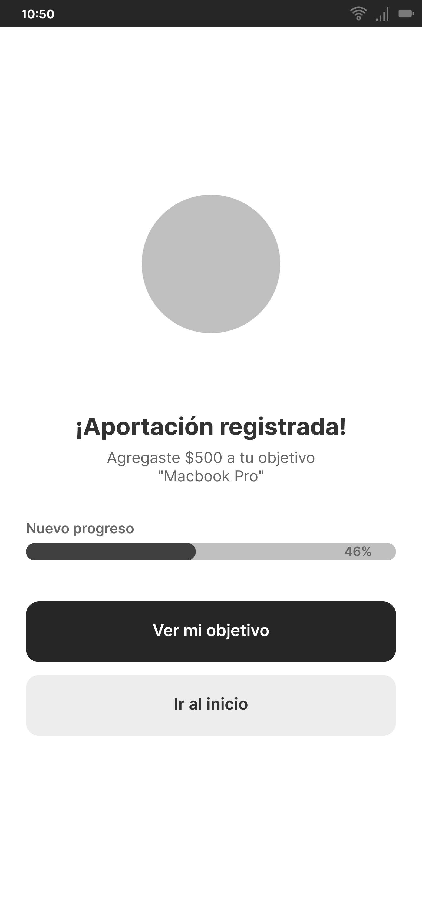
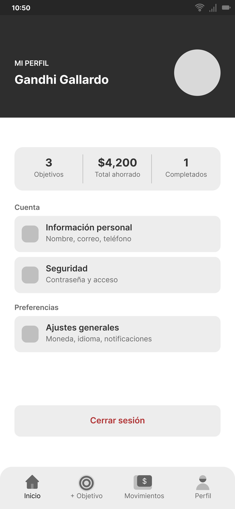
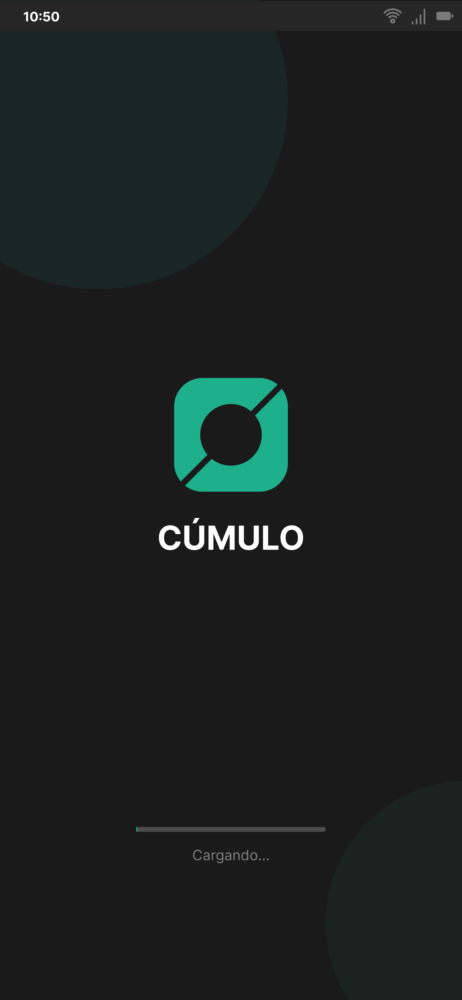
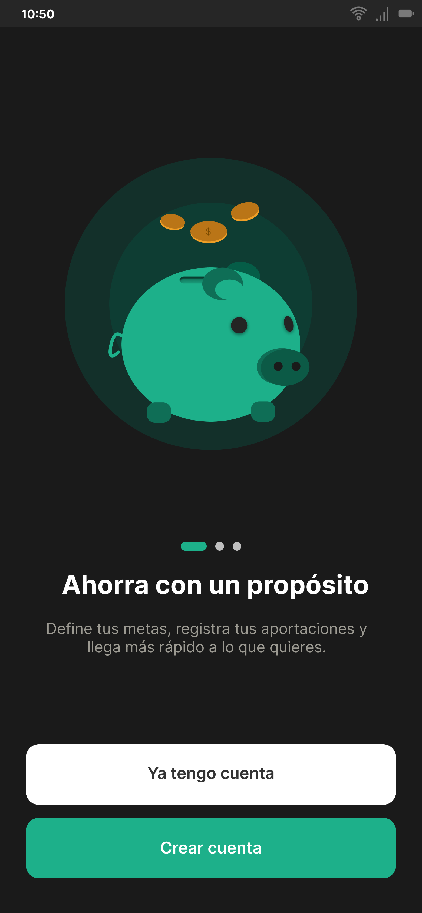
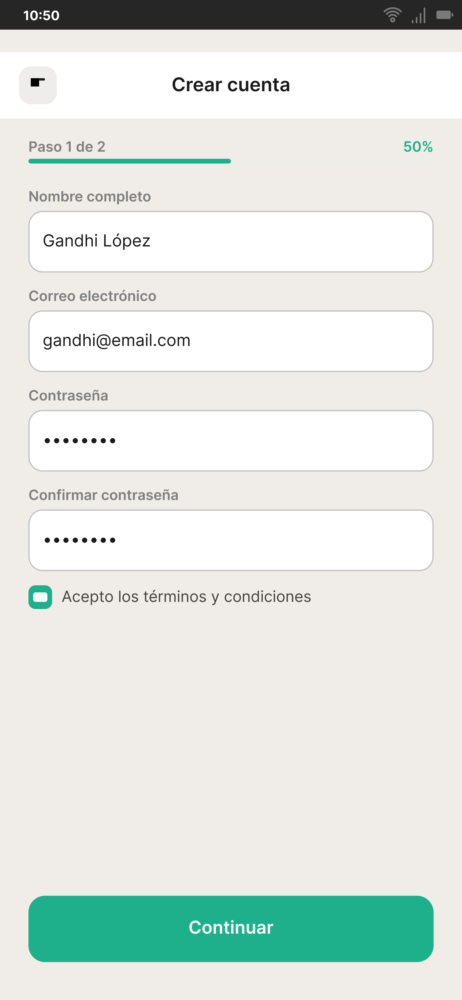

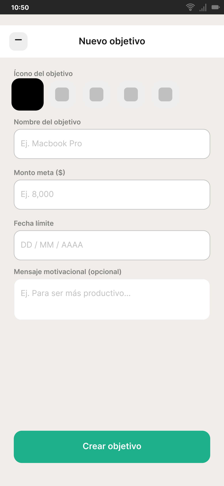


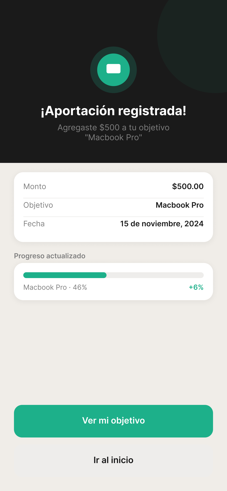
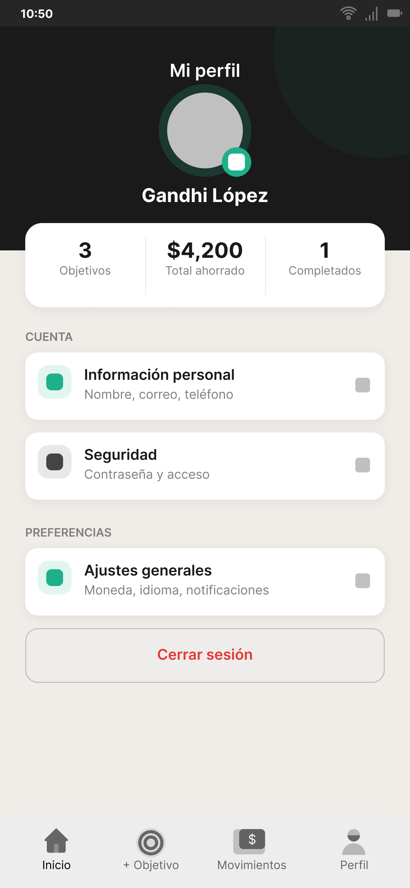
El carrusel doble superior muestra la correspondencia exacta entre cada etapa de diseño. La hilera superior (A) expone los wireframes conceptuales en tonos grises, diseñados para validar las jerarquías de texto y los flujos elementales. La hilera inferior (B) muestra la interfaz de alta fidelidad resuelta, donde la tipografía, los pesos visuales y los contrastes de color oliva (#5E6E4C) se integran de forma coherente.
Características Clave del Producto
-
01 / Identidad y Metas
Foco en Objetivos Concretos
El ahorro tradicional suele fallar por su abstracción mental. En Cúmulo, el ahorro se vincula a metas físicas y tangibles con imágenes representativas y nombres personalizados.
Diseñamos una experiencia de visualización basada en un anillo de progreso circular limpio que indica el avance porcentual y los días restantes de forma directa, eliminando las tablas complejas.
-
02 / Interacción Inmediata
El Botón Express
Para registrar pequeñas cantidades de dinero sobrantes de la rutina diaria, los usuarios tradicionalmente debían teclear montos manualmente. Esto agregaba fricción en entornos de alta distracción.
Desarrollamos el Botón Express que habilita atajos con montos preestablecidos (ej. $10, $50, $100) y confirmación instantánea. Un solo tap es suficiente para apartar el dinero de forma inmediata.
-
03 / Gamificación
Rachas de Dopamina
Tomando inspiración de las dinámicas conductuales de habituación exitosas en otras industrias, implementamos un contador de rachas ("streaks") activo en la parte superior del Dashboard de inicio.
Si el usuario registra un ahorro de forma diaria (consecutiva), el streak se mantiene activo y en aumento. Este disparador psicológico genera un compromiso diario que estimula la constancia del ahorro.
-
04 / Consistencia Visual
Sistema de Diseño Atómico
La sobriedad editorial de Cúmulo se sustenta en bases de diseño estructuradas. Creamos un kit de interfaz basado en tokens de espaciado, cuadrículas consistentes de 8px y un conjunto de componentes reutilizables.
Esto asegura una transición visual perfecta entre todas las pantallas de la aplicación, al mismo tiempo que agiliza el desarrollo técnico reduciendo el código redundante en la maquetación.

Impacto y Validación
Validé el prototipo de alta fidelidad de la aplicación móvil con un grupo de 8 usuarios a través de pruebas de usabilidad de tarea guiada. Las métricas de desempeño cuantitativo demostraron que el sistema de registro express y el streak de gamificación resuelven el dolor de la entrada de datos, garantizando una adopción fluida en rutinas diarias saturadas de estímulos.
Siguientes Pasos
Para la Fase II, el objetivo es complementar el ecosistema mediante una plataforma web de escritorio responsiva (Cúmulo Web), pensada para que el usuario pueda sentarse con calma a planificar metas a largo plazo y visualizar estadísticas de ahorro mensuales detalladas.